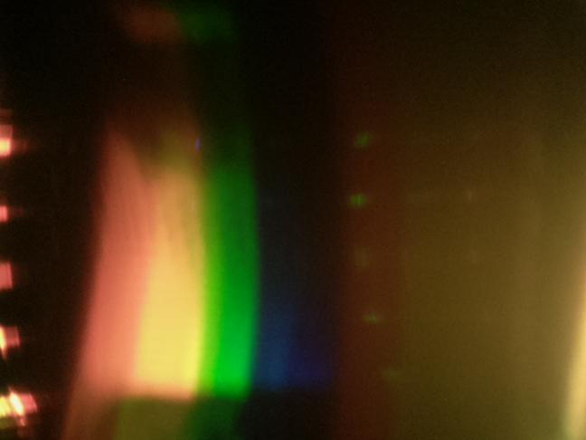
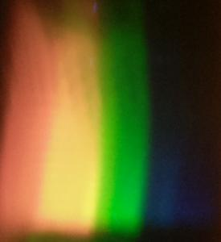
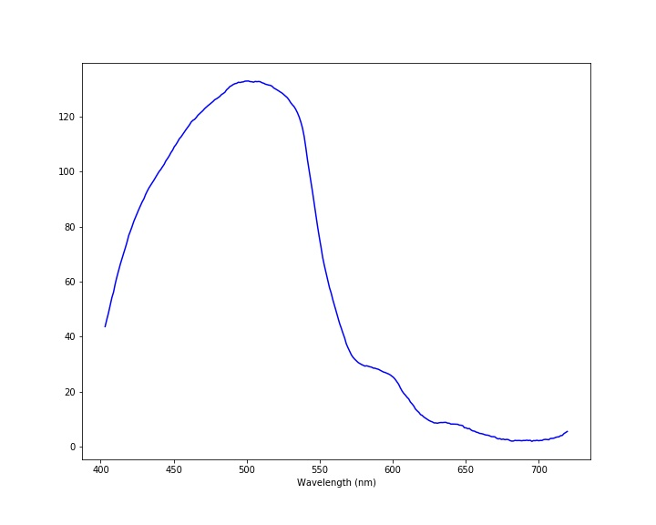

Experiment No. 10: Filtered LightMeasurement taken on 20211210-124337Scientist: ArabellaLight source: LED Lamp Bulb Transmission sample: 3D Snowflake Christmas Glasses Exposure: 10000000 µsec Before Experiment NotesI'm now testing filtered light. I'll compare this with a normal spectrum. These glasses normally show a snowflake when viewing a light source, kind of like the piece of the glasses over the camera. |
ImagesRaw imageProcessed imageSpectrum |
DataDownload data - spectrum-20211210-124337.csv |